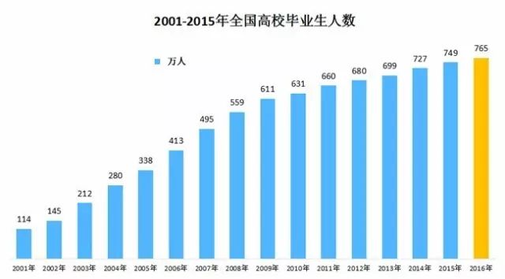
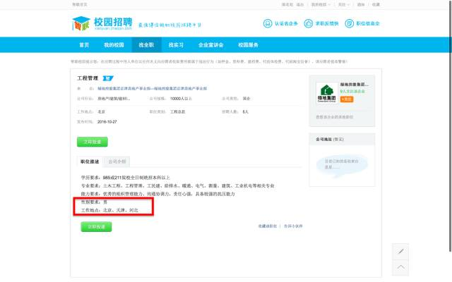
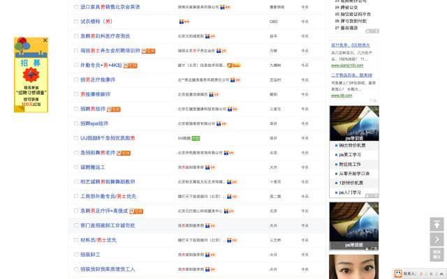
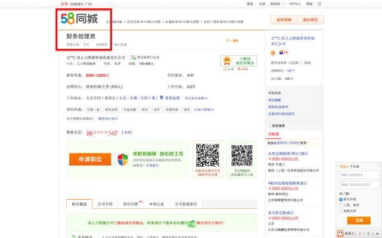

2016年的高校毕业生是765万人，中职毕业生和初高中毕业后不再升学的学生人数也大约如此。青年的就业群体加在一起大约在1500万人左右。依照历年的趋势，2017年的毕业生会更多。很多应届生会选择在校园招聘上应聘，可是校招往往也是就业性别歧视的重灾区。

（人社局发布的历年高校毕业生人数情况）
每年的9月、10月，是秋招的旺季，十一月时秋招也即将结束，很多毕业生都希望抓住秋招的尾巴。网上有这样的标语：“千万不能错过的招聘季”。学长、学姐们，也会提醒应届生：“千万不要错过秋招，要不然你将面临严酷的春招。”

（智联招聘的页面仍然有明显的性别歧视现象）
可是，在数不胜数的校招信息中，就业性别歧视招聘现象却以各种形式出现：“限男”、“限NAN”。拒绝录用女性，总是可以找到各种各样的理由：你太年轻，我们需要有经验的；你年纪太大，我们需要18-30岁之间的；你还没有男朋友，以后结婚变动会很大；你已经结婚了，以后要照顾孩子，没时间胜任……

（58同城的招聘页面）
什么理由都可以成为企业拒绝录用女性的理由。可是，我国法律的《就业促进法》、《妇女权益保障法》均明确提出：“用人单位不得以性别为由拒绝录用妇女，或者提高对妇女的录用标准”。

（像这种违法的情况，可以向人社局的监察部门举报哒）
这些明确违法的企业，真是让人受够了！！
如果你曾经经历过校园招聘，如果你曾经在校招中遭受到了性别歧视，如果你曾经听过就业性别歧视的经历，如果你愿意作出一点点改变，请支持这个征集活动。
参与形式：
1、在看到就业性别歧视标语的时候，纪录下来，发送文字给我们；
2、把自己知道的就业性别歧视的经历，记录下来，把小故事发送给我们；
3、在看到校招现场中带有就业性别歧视的标语的时候，拍下来，发送照片给我们；
4、在遇到就业性别歧视的时候，拍摄下来，发送视频传到网络上，并告知我们。
联系方式：
1、微博私信我们；
2、微博转发，并@我们；
3、在微信公众号私信我们。
征集时间：
2016年11月11日——2016年11月31日
（欢迎关注微博账号：女权行动派吃不完）